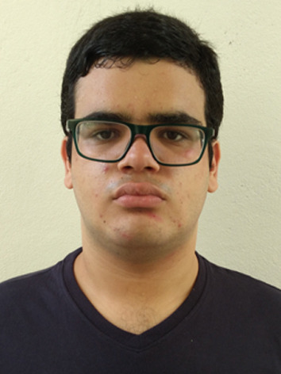

11/05/2006 (19 anos)
Rua Capitão Otávio Ramos, 95, Itagaçaba, Cruzeiro, São Paulo
12730-110
Telefone Fixo: (12) 3144-1418
Telefone Celular: (12) 98830-7230
Brasileira
Solteiro
Atuar como estagiário em Análise e Desenvolvimento de Sistemas, contribuindo para o crescimento da empresa e aprimorando minhas habilidades técnicas.
Instituição: Faculdade de Tecnologia de Cruzeiro – Prof. Waldomiro May
Cidade: Cruzeiro, São Paulo
Curso: Análise e Desenvolvimento de Sistemas
Período: 2024 - 2026
Status: Cursando
Disposição para o trabalho em equipe;
Disciplina para seguir as normas e os regulamentos da empresa;
Motivação para o apredizado e desenvolvimento de novas habilidades;
Facilidade com aplicativos de mensagens e redes sociais.
Português: Nativo
Inglês: Básico
Conhecimento em lógica de programação;
Conhecimento em HTML;
Conhecimento em Word e Excel.
Curso de Algoritmos (Curso em Vídeo)